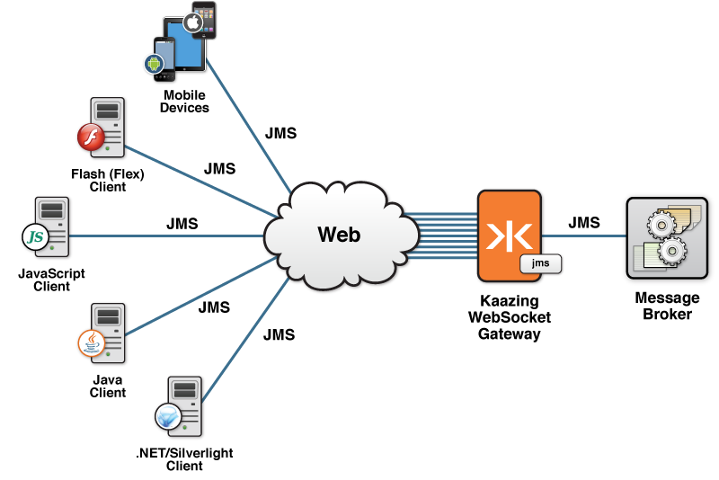
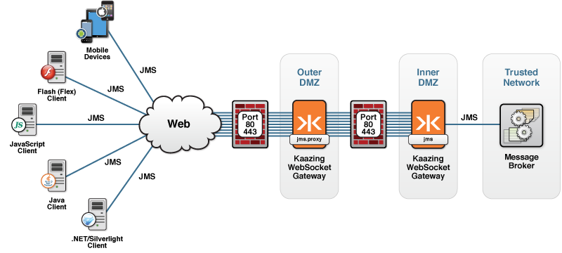

JMS Services for Kaazing Gateway
This document describes the JMS services for Kaazing Gateway that you can use in a Gateway configuration:
jms
This type of service is used to expose the jms service, which allows you to configure the Gateway to connect to any back-end JMS-compliant message brokers. To learn about common Gateway production deployments, see Common Kaazing Gateway Production Topologies.
The following sections provide more information about the jmsService for Kaazing Gateway:
- How the jms Service Handles Connections
- How the jms Service Handles Topic Subscribers
- Durable Subscribers
- Last Value Cache
- Delta Messaging
- Using Wildcards with Last Value Cache or Delta Messaging
- Message Conflation
- Property-Based Routing (PBR) and Virtual Queues
- jms Service Required Elements
- jms Service Properties
- jms Service Properties for the topic Element
- jms Service Environment Properties
- Configuration Examples: jms Service
Note: To integrate the Gateway with different JMS-compliant message brokers, see About Integrating Kaazing Gateway and JMS-compliant message brokers.
The jms service offloads connections and topic subscriptions using a single connection between the Gateway and your JMS-compliant message broker. The main benefit of offloading is that the Gateway scales to a massive number of clients while putting minimal pressure on your messaging system.
- Offloading connections means the
jmsservice can maintain many client connections through a single connection to the JMS-compliant message broker. - Offloading topic subscriptions means that the
jmsservice can maintain many clients subscribing to a given topic using a single subscription to the JMS-compliant message broker.
JMS connections and topic subscriptions are described in How the jms Service Handles Connections and How the jms Service handles Topic Subscribers.
The following figure shows how each incoming client connection enters the Gateway, then connects through the jms service using a single connection to the JMS-compliant message broker.

Figure: Offloading Connections Using the jms Service
Most JMS destinations (queues and topics) are created and treated as static resources, but dynamic destinations, known as temporary destinations (temporary topics and temporary queues), are also supported by the jms service. Temporary destinations are created dynamically, not statically by an administrator, to automatically enable private, scalable communication between the client and the server.
When a client subscribes to a destination, a corresponding, new temporary JMS destination is created implicitly by the client application, and is used as a unique destination for replies. Because the identity of the temporary destination is known only by the connection or session that created it, the JMS header field JMSReplyTo is always used in conjunction with temporary destinations to communicate the identity of the temporary destination in the message header.
Upon receiving a message, the client picks up the identity of the temporary destination from the JMSReplyTo field in the message header, performs the requested workflow, and then sends the message out to the temporary destination. The temporary destination exists only for the duration of the connection and is removed on the server side as soon as the connection or session is closed.
JMS implementations provide a factory class in their JAR files. For example, the Apache ActiveMQ class, org.apache.activemq.jndi.ActiveMQInitialContextFactory, is included in the activemq-all-5.10.0.jar file that ships with the Gateway. The Gateway connects directly to Apache ActiveMQ when you use the jms.proxy service. To use another JMS implementation, see About Integrating Kaazing Gateway and JMS-compliant message brokers to learn how to copy the implementation’s JAR file to the GATEWAY_HOME/lib directory and specify the name of the class as the value for the env.java.naming.factory.initial property.
How the jms Service Handles Connections
To support very large numbers of Web clients (in the tens of thousands or even hundreds of thousands), the jms service uses just one or a few JMS connections to the JMS-compliant message broker to service all clients. This is known as connection sharing or connection fanout. By default, the jms service uses just one connection but you can configure a specific number of broker connections using the connection.count service property.
Each client connection is associated with one of the broker connections for the duration of the client connection. If the broker reports an exception on a particular connection, then that connection is closed and reestablished automatically by the jms service, without interrupting service to the associated clients.
How the jms Service Handles Topic Subscribers
When a client subscribes to a topic (that is, creates a MessageConsumer object on a topic), the jms service establishes a corresponding subscription with the JMS-compliant message broker. That same subscription is then used to service all other clients subscribing to the same topic and JMS API message selector (if applicable). By offloading topic subscriptions in this way, a single topic subscription to the broker can service tens of thousands of clients subscribing to the same topic. This feature is known as subscription sharing or subscription fanout.
The topic subscription is maintained as long as at least one client is subscribed to that topic, unless you specifically configure the topic to maintain a permanent topic subscription (described in the How the JMS Service Handles Connections section).
If there are multiple broker connections (that is, the connection.count service property is set to a value greater than 1), each with clients subscribed to the topic, then a shared wildcard subscription (described in the How the JMS Service Handles Connections section) is made to the topic on each connection.
Note: You can use wildcards to identify large numbers of topics on which you want to configure a last value cache.
Permanent topic subscriptions
Configuring permanent topic subscriptions is primarily intended for use with last value cache. To configure the jms service to maintain permanent subscriptions with the JMS-compliant message broker for certain topics:
- Add
topicelements to thejmsservice properties in the Gateway configuration file. - Configure the
subscription.lifetimetopic property with its value set toconnection. When thesubscription.lifetimetopic property is set toconnection, a subscription to the topic is established automatically during Gateway startup for each connection that thejmsservice establishes with the broker.
If subscription to the topic fails (for example, because the topic is not defined in the JMS-compliant message broker), then this is treated the same as a failure to connect to the JMS-compliant message broker. That is, the connection is closed and reattempted later, depending on the setting of the reconnect.delay service property (the default is a five-second delay). The error message from the failed attempt to subscribe is reported in the Gateway error log. Clients cannot connect to the jms service until the subscription succeeds.
Shared wildcard subscriptions
To support a greater level of subscription fanout, you can configure the subscription.sharing topic property to use a single subscription to a wildcard topic to service all clients subscribing to any topics matching that wildcard. In this case, the Gateway establishes a subscription to the wildcard topic with the JMS-compliant message broker whenever a client first subscribes to any matching topic (or during Gateway startup if the subscription.lifetime topic property is set to connection). The Gateway then receives and processes all messages arriving on that wildcard topic, routes the messages to the appropriate clients depending on the actual topic to which the message was originally sent, or drops the message if there are no matching clients.
Shared wildcard subscriptions are useful in systems with a great many topics (for example, thousands or more) where clients each subscribe to a large number of different topics. In such cases, it is more efficient to service clients using a single wildcard subscription to the JMS-compliant message broker instead of using a separate subscription to each individual topic. Subscription sharing is especially useful when used with last value cache.
See Last Value Cache for more information and examples.
Durable Subscribers
The jms service also supports durable subscriptions with certain JMS-compliant message brokers. This support ensures that all messages are retained until they are received by the subscriber or until they expire. Even if the subscriber goes offline, messages are retained and delivered once the subscriber returns and resumes the durable subscription. To use durable subscriptions with the Gateway, you may need to configure your JMS-compliant message broker to accept durable subscriptions. As an administrator, you need to determine the durable subscriber names used by the Gateway.
Configuring the JMS-Compliant Message Broker to Accept Durable Subscriptions
The Gateway support for durable subscriptions depends on your JMS-compliant message broker:
- TIBCO Enterprise Message Service (EMS): The Gateway supports durable subscriptions without additional configuration.
- Apache ActiveMQ: The Gateway does not currently support the use of durable subscriptions with ActiveMQ.
- Informatica Ultra Messaging (UM): The Gateway supports durable subscriptions with the following requirements: you must use the fixed client ID value on all connections and you must specify the same fixed client ID value with the
anonymous.clientid.patternproperty on thejmsservice. This property allows the Gateway to verify that all connections to Informatica UM are using the same client ID, which is essential for durable subscribers to work properly. - Other message brokers: Durable subscribers may work with other JMS-compliant message broker if the message broker implements specific behavior for the
createDurableSubscriber()method as required by the Gateway. The message broker must support one of the following conditions:- Creating durable subscribers using JMS Connections with no client ID set. This capability is in the emerging JMS 2.0 specification, and is already supported by some message brokers (such as TIBCO EMS). The durable subscription must be able to migrate to another connection without closing the first connection.
- Creating durable subscribers on multiple JMS connections that ALL have the same client ID. The durable subscription must be able to migrate to another connection without closing the first connection. In this case, to use durable subscribers with such JMS-compliant message broker, the provider must be configured to use the fixed client ID value on all connections, and you must specify the same fixed client ID value with the
anonymous.clientid.patternproperty on thejmsservice. This property allows the Gateway to verify that all connections to the JMS-compliant message broker are using the same client ID, which is essential for durable subscribers to work properly.
Configuring Durable Subscriber Names Used by the Gateway
To create a durable subscriber for a topic, the client application calls the createDurableSubscriber() method of a session object and specifies a durable name and a destination. When your client application creates a durable subscriber, the Gateway creates a corresponding durable subscriber on the JMS-compliant message broker. To allow the Gateway to do this, you must either configure the JMS-compliant message broker to allow the Gateway to use dynamic durable subscribers or statically predefine in your JMS-compliant message broker all the durable subscribers that you will be using.
The durable names that the Gateway will use depend on whether or not a client ID is set. For instructions for determining how to set the client ID in the application, see the client how-to appropriate to the language of your application and follow the steps for using the client library. The following table describes the durable names the Gateway uses:
| If the client application … | The Durable Name … | The Gateway … |
|---|---|---|
| Does not set a client ID | The durable name the client passes into the createDurableSubscriber() method must be globally unique. Each user of the application must use a distinct name because the Gateway uses the same name for the back-end durable subscriber on the JMS-compliant message broker. |
Creates a durable subscriber in the JMS-compliant message broker using only the given durable name. For example, if the client application creates a durable subscriber with the name user1_price then the Gateway creates a back-end durable subscriber in the JMS-compliant message broker with the name user1_price. |
| Sets a client ID | The same durable name can be used by multiple clients (or users) when creating a durable subscriber, because the different durable subscribers are distinguished by the different client ID values. The client ID forms part of the full, unique identifier of the back-end durable subscription name. | Dynamically creates a corresponding durable subscriber on the JMS-compliant message broker whenever the client application creates a durable subscriber. The back-end durable name is formed from the durable name given by the client application and the client ID set on the client application’s connection in the format specified by the client.durable.name.format property on the jms service or the client.durable.name.format property on the jms.proxy service. |
The documentation for developers provides complete information about using the Gateway client libraries to create durable subscribers. Also, see the JMS API documentation for more information about the createDurableSubscriber method.
Last Value Cache
You can configure the Gateway to hold recent messages for a topic in a last value cache. When you enable last value cache and a client subscribes to a destination, the Gateway first delivers any cached messages to the client and then delivers the live stream of messages.
Last value cache is especially useful for clients that make a new subscription to a topic and want to immediately receive the most recent message history for the topic. For example, if messages are delivered hourly, a client connection that arrives 30 minutes into the hour can get the latest message immediately. Some use cases for the last value cache feature include:
- When your publisher publishes messages infrequently, or unpredictably
- When a client would need to wait too long for the next message when they first subscribe
Note: Last value cache only applies to non-durable topic subscriptions. Last value cache does not apply to queue receivers or durable topic subscribers, because the JMS-compliant message broker maintains state on those destinations (queues and durables) and tracks whether messages should be redelivered.
You do not need to write any custom code to use last value cache. Last value cache is disabled by default (per standard JMS behavior) but you can easily enable it by editing the Gateway configuration. For example, edit the gateway-config.xml file to add a topic element and set the cache.size property along with any additional associated last value cache properties for the topics on which last value cache behavior is desired.
When you enable last value cache for a topic, then the jms service:
- Creates a separate in-memory last value cache for each topic subscription made to the JMS-compliant message broker.
- Maintains the last value cache for the duration of that subscription. See How the JMS Service handles Topic Subscribers for a description of the lifecycle of topic subscriptions to the JMS-compliant message broker.
For more information about configuration properties, see jms Service Properties for the topic Element.
Configuring and Using Last Value Cache
- Enable Last Value Cache on Specific Topics
- Configure Last Value Cache to Populate (Bootstrap) In-Memory Last Value Cache
- Configure a Shared Wildcard Subscription to Minimize the Number of Topic Subscriptions and Use a Single Shared Cache
Enable Last Value Cache on Specific Topics
The following example enables last value cache on a specific topic events.calendar and any topics that match a wildcard name of events.football.>. Each topic needs to be in its own topic element. In this example, the Gateway retains the last message for the destinations given. When a new client subscribes to one of those destinations, the last value cache messages are sent to the client before any new live messages from the broker.
<service>
<accept>ws://gateway.example.com/jms</accept>
<type>jms</type>
<properties>
<topic>
<!-- Single topic -->
<name>events.calendar</name>
<cache.size>1</cache.size>
<cache.durable.name.format>lvc_%s</cache.durable.name.format>
<cache.durable.client.id>client1</cache.durable.client.id>
</topic>
<topic>
<!-- Broker specific topic wildcard -->
<name>events.football.></name>
<cache.size>1</cache.size>
</topic>
<topic>
...
</topic>
</properties>
</service>
Note: Set the cache.size property to 1 to handle the majority of use cases. (The cache.size property defaults to 0.) See jms Service Properties for the topic Element for information about the cache.size property and other topic properties.
Configure Last Value Cache to Populate (Bootstrap) In-Memory Last Value Cache
You can optionally configure last value cache to populate (bootstrap) its in-memory last value cache for a given topic whenever recent messages for that topic are not already available in cache.
How you configure bootstrapping depends on whether or not your JMS-compliant message broker already has built-in support for replaying prior messages (sometimes referred to as last value cache or subscription recovery).
- If your JMS-compliant message broker supports replaying prior messages, then enable it for the topics in question and do not specify the cache.durable.name.format and cache.durable.client.id properties in the Gateway configuration. Some brokers already have built-in support for replaying prior messages. For example, see the Apache ActiveMQ documentation for more information about the ActiveMQ subscription recovery policy.
-
If your JMS-compliant message broker does not already have built-in support for replaying prior messages, then you should set the cache.durable.name.format and cache.durable.client.id properties to allow the Gateway to populate (bootstrap) the last value cache for a given topic when needed using a durable subscriber.
To trigger bootstrapping, specify the cache.durable.name.format and cache.durable.client.id topic properties, as shown in the following example.
<service> <accept>ws://gateway.example.com/jms</accept> <type>jms</type> <properties> <topic> <!-- Broker specific topic wildcard --> <name>events.></name> <cache.size>1</cache.size> <cache.durable.name.format>lvc_%s</cache.durable.name.format> <cache.durable.client.id>client1</cache.durable.client.id> <subscription.lifetime>connection</subscription.lifetime> </topic> <topic> ... </topic> </properties> </service>
Bootstrapping last value cache is useful to make sure last value messages are always available for clients, even when the Gateway is restarted, or in a situation where all clients unsubscribe and then one client re-subscribes. The preceding example includes the subscription.lifetime topic property that is set to connection. In this case, bootstrapping efficiently preloads the cache before clients first subscribe, getting the high message volume work done so the users do not experience lag when first subscribing to the topic.
If the subscription.lifetime topic property is set to consumer, then bootstrapping is performed only when a client first subscribes to the topic through the Gateway. The bootstrap process uses a durable subscriber that is created by the Gateway the first time bootstrap occurs (unless it was manually created externally in advance).
The last cache.size messages sent to the topic since the durable subscriber was created are replayed from the cache (or the durable subscriber) to each new client that subscribes to the topic. Configuring the subscription.lifetime topic property is described in the Configure a Shared Wildcard Subscription to Minimize the Number of Topic Subscriptions and Use a Single Shared Cache section.
If your broker supports it, you should specify an upper bound on the number of messages to retain on the durable subscriber that is used for bootstrap. Doing so helps to limit overhead on the broker. In addition, you might want to set a time to live (TTL) when publishing messages so they live in the broker only long enough for newer messages to replace them. For example, if messages are published every hour, then set the expiration to one hour to be certain there is at least one message persisted by the broker at all times while keeping the total number of messages bounded.
The broker does not persist messages until the durable subscriber is created. Because the Gateway only creates the durable subscriber when a client first subscribes to the topic (or when the Gateway is first started if subscription.lifetime is set to connection), the first client does not see any cached last value messages. For the first client to see the messages, you can manually create the durable subscriber and then send some messages to the topic before starting up the Gateway. The Gateway then replays those messages to all clients.
See cache.durable.name.format, cache.durable.client.id, and subscription.lifetime for more information.
Configure a Shared Wildcard Subscription to Minimize the Number of Topic Subscriptions and Use a Single Shared Cache
Unless you configure the special topic properties, subscription.lifetime and subscription.sharing, the in-memory last value cache for a given topic comes and goes according to whether or not any clients are currently subscribed to that topic. For consistent availability of last messages when clients subscribe, you must do one of the following:
- Configure your JMS-compliant message broker to provide last messages (if the broker has that capability)
- Configure the
jmsservice to bootstrap last value cache - Use the
subscription.sharingandsubscription.lifetimetopic properties
The subscription.sharing and subscription.lifetime topic properties are specifically designed to:
- Provide consistent last value messages across all topics matching a given wildcard.
- Reduce the number of durable subscribers needed to bootstrap last value cache.
- Perform bootstrap during Gateway startup to avoid clients experiencing delays.
The following topic configuration example shows how you might configure subscription.sharing and subscription.lifetime:
<topic>
<!-- Broker specific topic wildcard -->
<name>quotes.*.*</name>
<cache.size>1</cache.size>
<subscription.lifetime>connection</subscription.lifetime>
<subscription.sharing>wildcard</subscription.sharing>
</topic>
With this configuration, the jms service establishes a subscription to the wildcard topic name quotes.*.* immediately after establishing the connection to the JMS-compliant message broker during Gateway startup. An in-memory cache of last messages is maintained from that time on. When a client subscribes to any topic matching the wildcard (for example, quotes.NASDAQ.NFLX), any available last messages matching that destination are served from the cache, and any incoming matching live messages are delivered to the client. This applies even if the client subscribes to a wildcard, provided that wildcard matches the configured wildcard, for example: quotes.NASDAQ.*.
A shared wildcard subscription is recommended when last value cache functionality is needed on a very large number of topics (hundreds, thousands or even hundreds of thousands) because it greatly offloads the JMS-compliant message broker (by using a single subscription to it) and provides a consistent cache of last value messages.
When should you use shared wildcard subscriptions?
It is important to know the disadvantages and tradeoffs when using shared wildcard subscriptions. The Gateway must process all messages on all topics matching the wildcard (quotes.*.*) to keep the last value cache up to date in memory. If the message rate is high that may use significant memory and CPU, which is wasted if no clients actually subscribe to matching topics. It is important to be judicious in choosing which wildcard topic names to configure in this way. For example:
- If you know that clients only subscribe to NASDAQ quotes, then it is more efficient to set the wildcard name to
quotes.NASDAQ.*. - If you know that clients only subscribe to NASDAQ or NYSE, then define two separate topic configurations: one for
quotes.NASDAQ.*and one forquotes.NYSE.*.
Memory Usage with Shared Wildcard Subscriptions
How you set up shared wildcard subscriptions is also important when it comes to memory usage. If you use a shared wildcard subscription with last value cache, especially a permanent one (with subscription.lifetime=connection), the memory taken up by the cache increases each time a message is received on a new topic matching the shared wildcard subscription established by the Gateway. For example, if the configured wildcard name is quotes.NASDAQ.* and messages are sent to 100,000 different topics (such as stock tickers), and the configured cache.size is 1 (message per concrete topic), then 100,000 messages are cached in memory.
The exact amount of memory used depends on the nature of the messages (property set by the application, length of the message body, and so on). In fact, in test cases where text messages with a 200-character body and no application-specific properties were set, the memory used per cached message was approximately 920 bytes; 100,000 cached messages used 92 megabytes of memory. Depending on the size of your messages, this number might be larger or smaller for your applications.
To optimize memory usage with last value cache:
- Avoid using wildcards that are too sweeping by focusing your wildcard subscriptions as described in When should you use shared wildcard subscriptions?.
- Consider setting an expiration time (TTL) so messages live in the broker only long enough for newer messages to replace them. Cached entries are only cleared if a user subscribes to a particular topic and matching messages in the cache are found to have expired.
- Follow the recommendations in Best Practices for Last Value Cache.
Best Practices for Last Value Cache
Focus shared wildcard subscriptions as narrowly as possible
When configuring shared wildcard subscriptions (specifying the subscription.sharing topic property as wildcard), target the subscription as narrowly as possible to reduce unnecessary messages being delivered from the message broker to the Gateway. For example, imagine you have the following configuration:
<topic>
<!-- Broker specific topic wildcard -->
<name>events.></name>
<cache.size>1 </cache.size>
</topic>
For instance, say the subscription events.> resolves to thousands of topics. All of the messages for those topics are now delivered to the Gateway. If your clients only subscribe to a small number of those topics, then the majority of messages are delivered to the Gateway and cached when there are no consumers that need them. This uses unnecessary resources.
In this case, a more specific subscription is better. If your clients all subscribe to events.football, then use this configuration:
<topic>
<!-- Broker specific topic wildcard -->
<name>events.football.></name>
<cache.size>1</cache.size>
</topic>
Now the Gateway will not receive and cache messages for events.baseball, events.cricket, events.racing, and so on.
Specifying the wildcard subscription as narrowly as possible reduces memory usage, gives better performance, and reduces load on the message broker.
Set subscription.sharing to wildcard
If subscription.sharing is unspecified or is set to exact (the default), then each unique topic name results in a separate subscription from the Gateway to the message broker and, if bootstrap is enabled, to an associated durable subscriber.
For example, if consumers subscribe to events.football and events.baseball, that results in two subscriptions from the Gateway to the broker. It does not matter how many consumers there are, as it is unique topic names that matter, not the number of consumers subscribing to them.
If your client base subscribes to a large number of unique topic names, that results in a large number of subscriptions from the Gateway to the broker. But by setting subscription.sharing to wildcard and specifying a wildcard subscription in your Gateway configuration, you can reduce the number of individual subscriptions from the Gateway to the message broker.
For example, if your Gateway has the following configuration, then it defaults to exact because subscription.sharing is unspecified:
<topic>
<!-- Broker specific topic wildcard -->
<name>events.></name>
<cache.size>1</cache.size>
</topic>
If consumers subscribe to the topics events.football, events.baseball, events.cricket, and events.racing, then that results in four subscriptions from the Gateway to the message broker.
Now, let’s change the configuration wildcard to the following:
<topic>
<!-- Broker specific topic wildcard -->
<name>events.></name>
<cache.size>1</cache.size>
<subscription.sharing>wildcard</subscription.sharing>
</topic>
If consumers subscribe to the topics events.football, events.baseball, events.cricket, and events.racing, then there is only one subscription from the Gateway to the message broker. That’s because the subscription to events.> results in messages that also apply to events.football, events.baseball, events.cricket, and events.racing.
Setting subscription.sharing to wildcard in this way provides several benefits:
- Minimizes the number of subscriptions to the message broker, reducing load on the broker.
- Allows the Gateway to have only one last value cache instead of one for each unique subscription.
- If bootstrap is enabled, then last value cache uses a single durable subscriber instead of four.
Set cache.size to 1
By default, the cache.size property is set to 0, which means that last value cache is disabled. In general, you should set the cache.size property to 1 to handle most use cases.
<topic>
<!-- Broker specific topic wildcard -->
<name>events.></name>
<cache.size>1</cache.size>
</topic>
While replaying messages from the last value cache, the Gateway delivers higher priority messages before lower priority messages for each topic if the cache.size property is set to a value greater than one.
Enable Clustering when Using Last Value Cache with Durable Subscriptions
If you use cache.durable.client.id or cache.durable.name.format in your last value cache configuration, then a durable subscription is made to the JMS messaging system. The connection for this subscription is very short lived, usually sub-second, existing just long enough to retrieve newer messages.
If you have more than one Gateway configured this way, then multiple Gateways connect with the same durable client ID. The JMS specification says that you cannot have multiple subscribers with the same client ID at the same time. Therefore, the best practice is to configure clustering between the gateways so that they can coordinate usage of the durable client ID. Administrators must configure the cluster element for each Gateway using cache.durable.client.id or cache.durable.name.format in a topic element of the configuration.
Notes
- Message expiration: The Gateway does not deliver messages to the client if the messages have expired.
- Handling reconnections: When a client loses connectivity and then reconnects, the current set of messages from the last value cache is replayed, which may cause messages already observed by that client to be sent before the live stream. Following standard JMS practices, the JMSRedelivered field is always set on messages played from the last value cache. The client application can use this field to determine how to process the messages from the last value cache. For information about the
JMSRedeliveredproperty in a Kaazing Gateway client API, see the Client API Documentation. - Wildcards: You can use wildcards to identify large numbers of topics on which you want to configure a last value cache.
Delta Messaging
Delta messaging, when enabled, results in the Gateway sending a full message to the client, and thereafter only sending the deltas for subsequent messages. Configuring the Gateway to send deltas reduces bandwidth utilization and ensures clients receive current data.
Deltas can be any of the following:
- JMS Message Headers
- JMS Message Properties
- JMS MapMessage Items
Delta messages are disabled by default and must be enabled in the configuration. To enable delta messages, add a topic element to the properties for the jms service configuration and specify the topics on which to enable delta messages. You can name individual topics or specify multiple topics using wildcard syntax. Then set the message.delivery.strategy property to delta.
Notes
- Delta messages only apply to topics. Messages on queues or durable subscriptions to topics are not eligible for delta messages because they provide guaranteed message delivery (as described in the JMS specification).
- To achieve bandwidth reduction with delta messaging, ensure that applications convey changes from one message to the other via message properties or using MapMessages (rather than to the body of a BytesMessage or TextMessage).
- Wildcards: You can use wildcards to identify large numbers of topics on which you want to configure delta messaging.
After you enable delta messaging, the Gateway automatically computes deltas. The publisher and client application are unaware of the optimization. The publisher will always publish complete messages, and the client application will always receive complete messages.
See the message.delivery.strategy property and Example 3: JMS service with Delta Messaging for more information and an example.
Using Wildcards with Last Value Cache or Delta Messaging
You can use wildcards to configure last value cache for a large number of topics or to apply delta messaging to a number of topics without listing every topic in the Gateway configuration. Wildcard syntax differs depending on your JMS-compliant message broker. The wildcard name you use must conform to the syntax expected by your JMS-compliant message broker.
A common syntax is the “*” and “>” syntax. The “*” syntax will match any name on a path, and the “>” syntax recursively matches any destination starting from this name. If you use a message, refer to the broker documentation for more syntax information. (For example, if you are using a JMS-compliant message broker such as Apache ActiveMQ, see the Apache ActiveMQ documentation for more information about wildcards. In such a scenario, a JMS-compliant message broker that uses different characters might require that you configure the service properties wildcard.separator, wildcard.any.child, and wildcard.any.descendent.
Note: For IBM WebSphere MQ and RabbitMQ, the Gateway dynamically sets the following (required) wildcard properties:
wildcard.any.descendent=#
wildcard.separator=/
wildcard.any.child=+
Client Subscriptions Versus Gateway Configuration
Using wildcards in the Gateway configuration simplifies administration by enabling you to use a single symbol (wildcard) instead of listing every static topic and also lets you configure for dynamic topics where the topic names are not already known. Regardless of your use of wildcards in the Gateway configuration, the client can subscribe to specific named topics, or use wildcard subscriptions. The wildcard syntax you specify in the Gateway configuration does not have to be used in the client subscription; the client subscription and topic specification in the configuration are independent of each other.
The interplay between the client subscription and the Gateway configuration occurs when the client subscribes. The following table illustrates some examples of how different client subscriptions might or might not match topic definitions in the configuration. The topic name given in the client subscription is matched against the names given in the topic entries in the Gateway configuration. If there is no match, then delta messages are not applied.
The set of real topic names matched (or resolved by the broker after applying wildcards) for the client subscription must match or be a subset of the set matched for the configuration. In other words, the “Client Subscription” column in the following table must match or be a subset of the “Gateway Configuration” column.
| Gateway Configuration | Client Subscription | Result |
|---|---|---|
events.football |
events.football.* |
No match |
events.football |
events.football.> |
No match |
events.football.* |
events.football.> |
No match |
events.football.* |
events.football |
No match |
events.football.> |
events.football.* |
Match |
events.football.> |
events.football.saturday.* |
Match |
events.football.> |
events.football.saturday.> |
Match |
Message Conflation
Message conflation enables slower consumers to receive an approximation of higher rate message flows so that they do not get too far behind in the message stream. The Gateway performs message conflation, where a new message replaces the previous message, in a situation where a client cannot keep up with the live stream. Kaazing Gateway conflates messages on a topic from the JMS-compliant message broker arriving for that client. Whenever the client is able to start receiving messages, it receives the latest data. If all clients keep up with the live message stream, then no conflation occurs.
Conflation is always enabled on all topics and does not require configuration or custom code. Conflation does not apply to queues and durable topic subscriptions because they provide guaranteed message delivery, which requires all unexpired messages to be delivered to the client.
The Gateway conflates JMS messages that are in the same series—that is, the messages have the same body type (specifically, MapMessage, TextMessage, and BytesMessage), JMSDestination, JMSType and JMSPriority. For example:
- Messages must have the same JMSDestination to conflate (this is only relevant for wildcard subscriptions). The Gateway will not conflate messages on destination
events.football.manchester-vs-liverpoolwith a message on destinationevents.football.united-vs-arsenal. - Messages must have the same JMSType to conflate. The Gateway will not conflate a message of JMSType=car with a message of JMSType=plane.
- Messages must have the same JMSPriority to conflate. If there are messages with multiple priorities, they are conflated and cached separately and then replayed in priority order from the cache.
The Gateway also conflates messages in a shared topic. For example, a single topic might have messages for stock prices for different symbols. If you do not wish messages in a shared topic to conflate, then you can set the JMSType for different messages to be different, so that the Gateway only conflates messages of the same type.
When a client cannot keep up with the message flow, the Gateway must cache the messages that cannot be delivered into a conflation cache in order to apply the rules (listed previously) for conflation. The cache contains one entry for each message series such that there is an entry in the cache for each unique combination of JMSDestination, JMSType and JMSPriority.
The maximum number of entries in the conflation cache defaults to 100 and is controlled by the maximum.conflation.cache.size service property. If cache size is not sufficient, then warning messages are written to the Gateway log file, and you should increase the value of the maximum.conflation.cache.size property.
The Gateway delivers all messages from the last value cache without conflation. After the client is on the live stream, messages automatically conflate if the client becomes a slow consumer.
Property-Based Routing (PBR) and Virtual Queues
PBR allows a single physical queue to be used as an unlimited number of virtual queues, and routes messages to the appropriate consumer based on the value of a message property. Routing is based one of the following:
- The virtual queue name to which the consumer subscribed.
- A value derived from the logged on Subject by a configured identity resolver. Typically, the user's identity: user id or role.
If multiple clients subscribe to the same virtual queue, each will see all unacknowledged messages on that queue. Any clients may acknowledge the messages. If two clients acknowledge the same message, the second acknowledge has no effect. This behavior helps in cases where the virtual queue is driven by the user's identity and the same user logs on to multiple devices.
Properties for the queue Element
The queue element can be used in the jms and ibmmq services.
The following property descriptions use the concept of virtual name. This is the logical queue name to which the client is subscribed. The virtual name is the name passed into the JmsAuthorizationFactory, and reported as the JMSDestination property of messages received by the message consumer. The virtual name defaults to name. It can be automatically constructed by specifying virtual.name.format and virtual.name.resolver.
| Property | Required? | Description |
|---|---|---|
queue |
Required | This property is required to configure PBR and virtual queues. It is the parent element to the following elements. |
name |
Required | The queue name used by the client application to create a message consumer. If the value of name is a pattern (for example, name_*) then the variable part (represented by the *) is known as the discriminator. |
virtual.name.format |
Optional | A pattern used to form the virtual queue name (using String.format). It should contain a placeholder, %s, which will be replaced with the value returned by the class named in virtual.name.resolver. |
virtual.name.resolver |
Optional | This property is used to form the virtual queue name. The value of virtual.name.resolver is a class implementing interface Function<Subject, String>. The Gateway will instantiate and invoke the class to get a value which will then be injected into the virtual.name.format pattern (using String.format) to form the virtual name. This is not to be confused with the JmsUserIdentityResolver that might be configured in the user.id.resolver service property for auditing purposes. In some cases, the same class might be used for both purposes. |
system.name |
Optional | The name of the queue to which the Gateway will actually subscribe. This name might be modified by the queue.name.format property. If system.name is not in the configuration, then the system name defaults to the value of name. |
system.routing.property |
Optional | The value for this property is the name of the message property that will distinguish between messages sent to different virtual queues (for example, discriminator). This property may be used when the name is a pattern (such as stock_*) or when a virtual.name.format is given (such as stock_%s). The value of this message property is injected into the virtual name format to form the destination virtual queue name. When a user subscribes, messages are delivered to them when the value of the property named in system.routing.property matches the variable part of the virtual queue name to which the user is subscribed. For example, if a client subscribes to queue stock_ORCL they will receive all messages on the stocksys queue which have the discriminator property set to ORCL. |
message.consumers |
Optional | This property enables the ibmmq service to deliver each message to all consumers. The permitted values are one and all. For compatibility with normal JMS behavior, the default setting is one for regular queues. For queues using property based routing (PBR), message.consumers may only be set to the value all (the default value for such queues). Only available to the ibmmq service. |
routing.cache.size |
Optional | This property sets the size of the cache of message IDs stored to enable the ibmmq service to use a single shared queue subscription for all subscribers to the various virtual queues. For more information, see Property Based Routing (PBR) with MQ. Default value is 1000000. Only available to the ibmmq service. |
read.interval |
Optional.ibmmq service-only. |
Allows you to specify the maximum time the ibmmq service waits between get calls (MQGET) to poll queues with active subscribers for new messages, for queues matching the name of this queue element. This overrides any value given in service property queue.read.interval. This interval may be configured on a per queue basis inside a queue element (for any queue, not just those with property-based routing). You can specify the time interval syntax in milliseconds, seconds, minutes, or hours (spelled out or abbreviated). For example, all of the following are valid and represent typical values for this setting: 300ms, 300 milliseconds, 5s, 5sec, 5 secs, 5 seconds or 5seconds. Wildcard syntax can be used in the name property to apply read.interval to multiple queues. For example, the <name>personal_queue_*</name> property with <read.interval>1 sec</read.interval> would configure all queues with names starting personal_queue_ to have a read interval of one second. |
subscription.lifetime |
Optional.ibmmq service-only. |
Causes the MQ service to preload the message ID cache when the Gateway starts and when the Gateway reconnects to the MQ broker after a connection failure. The purpose of this property is to prepare the Gateway to handle incoming client subscriptions to virtual queues quickly. Permitted values are connection and subscription. To enable this functionality, set subscription.lifetime to connection. If subscription.lifetime is omitted or configured with the value subscription, then there is no automatic subscription to initialize the historical message ID cache. If subscription.lifetime is set to connection on a queue element that does not specify property-based routing (no value for system.routing.property), then an exception is thrown. |
For examples using these properties, see Use Cases for Property-Based Routing (PBR) and Virtual Queues.
Limitations of Property-Based Routing
- Queue message distribution is always to all consumers for the ibmmq service.
- The JMSRedelivered message property is never set to true for the ibmmq service. For information about the JMSRedelivered property in a JMS message, see the JMS Message interface and the getJMSRedelivered and setJMSRedelivered methods.
- When subscribing to a queue with property-based routing, the use of a message selector is not currently supported for the jms or ibmmq services. It will result in an error.
Example Configurations with the ibmmq and jms Services
The following configuration examples demonstrate how PBR is configured for the ibmmq and jms services.
ibmmq Example
The following example shows a ibmmq service configuration using property-based routing.
<service>
<name>IBM MQ JMS Service</name>
<description>Optimized JMS Service for IBM MQ</description>
<accept>ws://${gateway.hostname}:${gateway.extras.port}/jms</accept>
<type>ibmmq</type>
<properties>
<queue>
<name>chat</name>
<virtual.name.format>chat_%s</virtual.name.format>
<virtual.name.resolver>com.acme.messaging.UserIdResolver</virtual.name.resolver>
<system.name>chatsys</system.name>
<system.routing.property>to</system.routing.property>
</queue>
</properties>
<realm-name>demo</realm-name>
<!--
<authorization-constraint>
<require-role>AUTHORIZED</require-role>
</authorization-constraint>
-->
<cross-site-constraint>
<allow-origin>${gateway.hostname}:${gateway.extras.port}</allow-origin>
</cross-site-constraint>
</service>
For more information about the ibmmq service, see IBM® MQ Service for Kaazing WebSocket Gateway.
jms Service Example
The following example shows a common jms service configuration with the addition of a queue property, a queue name, system.name, and system.routing.property specified.
<service>
<name>JMS Service</name>
<description>JMS Service</description>
<accept>ws://${gateway.hostname}:${gateway.extras.port}/jms</accept>
<type>jms</type>
<properties>
<queue>
<name>stock_*</name>
<system.name>stocksys</system.name>
<system.routing.property>discriminator</system.routing.property>
</queue>
<connection.factory.name>ConnectionFactory</connection.factory.name>
<context.lookup.topic.format>%s</context.lookup.topic.format>
<context.lookup.queue.format>%s</context.lookup.queue.format>
<env.java.naming.factory.initial>
com.sun.jndi.fscontext.RefFSContextFactory
</env.java.naming.factory.initial>
<!-- The location of the .bindings file -->
<env.java.naming.provider.url>
file:/bindings_file_location
</env.java.naming.provider.url>
<!-- Dynamic destinations support; omit for static destinations -->
<destination.strategy>context</destination.strategy>
</properties>
<realm-name>demo</realm-name>
<!--
<authorization-constraint>
<require-role>AUTHORIZED</require-role>
</authorization-constraint>
-->
<cross-site-constraint>
<allow-origin>${gateway.hostname}:${gateway.extras.port}</allow-origin>
</cross-site-constraint>
</service>
Use Cases for Property-Based Routing (PBR) and Virtual Queues
Case 1 - PBR with Wildcarding
In this case, the client subscribes to a name such as stock_ORCL and gets a user view of stocksys via discriminator. The virtual.name.format is implicit.
<queue> <name>stock_*</name> <system.name>stocksys</system.name> <system.routing.property>discriminator</system.routing.property> </queue>
When user sends a message to stock_ORCL, the message is sent to the system name (stocksys) with the routing property (discriminator) automatically set to ORCL. When a user subscribes to stock_ORCL, they receive all messages on the stocksys queue which have the discriminator property set to the value ORCL. The getJMSDestination() method on such Messages returns the value stock_ORCL.
Case 2 - Automatic Subscribe to a User-specific Physical Queue
In this case, the client subscribes to messages and implicitly subscribes to their personal queue messages_USERID at the broker (there is a separate messages queue for each user in the broker).
<queue> <name>messages</name> <virtual.name.format>messages_%s</virtual.name.format> <virtual.name.resolver>com.acme.messaging.UserIdResolver</virtual.name.resolver> </queue>
When user sends a message to messages_John.Cage it gets sent to that queue with no transformation. Typically, in this case, users would be allowed to subscribe only to queue messages to see their own messages and would not be allowed to subscribe to say messages_John.Adams to see messages addressed to another user. This would be enforced by configuring a JmsAuthorizationFactory.
Case 3 - User-Based Routing Example
User-based routing uses the virtual.name.resolver property to form the virtual queue name from the user ID, and then uses property-based routing to use a single physical queue at the broker, improving efficiency over a separate queue per user. Here is an example where a client application being used by user John.Adams creates a message consumer on queue chat.
<queue> <name>chat</name> <virtual.name.format>chat_%s</virtual.name.format> <virtual.name.resolver>com.acme.messaging.UserIdResolver</virtual.name.resolver> <system.name>chatsys</system.name> <system.routing.property>to</system.routing.property> <routing.cache.size>2000000</routing.cache.size> <subscription.lifetime>connection</subscription.lifetime> </queue>
Based on this configuration, the Gateway and broker interact in the following way:
- When the client application being used by user
John.Adamscreates a message consumer on queue chat, the user is logically considered to have subscribed tochat_John.Adams, assuming thatJohn.Adamsis the value generated by theUserIdResolverclass specified invirtual.name.resolver. - If the customer's
JmsAuthorizationFactoryis configured, it verifies whether the user is allowed to subscribe to queuechat_John.Adams(and would forbid explicit subscribe tochat_John.Cagefor example). - The Gateway subscribes to queue
chatsysif it is not already subscribed to it. - The Gateway routes all messages whose to property value is
John.Adamsto the client application's message consumer. - When a Gateway client wants to send messages to a particular user, it must send them to the full virtual queue name, for example,
chat_John.Cage. The Gateway translates this name and sends the message to queuechatsyswith the to property set toJohn.Cage.
Back office applications must ensure that any messages sent directly to the broker without going through the Gateway have the destination property set to indicate the intended recipient of the message, and use the system queue name chatsys, not chat. To send a message to John.Cage users would set the to message property to John.Cage then send the message to queue chatsys.
jms Service Required Elements
The jms service has the following required elements:
accept: the URL at which the service accepts connections.properties: the properties needed to run the Gateway. The table in jms Service Properties describes the required and optional properties in more detail.
jms Service Properties
You can set the properties described in the following list at the service level on the jms service.
See also jms Service Properties for the topic Element for a list of properties that you can set at the topic level. Properties set at the topic level override values set at the service level.
anonymous.clientid.pattern
Required? Yes
This property is required if the JMS-compliant message broker is configured to use a fixed client ID. For durable subscribers, set this property to the value of the fixed clientID. For example, on connections created using the UM connection factory, the clientID is preset to UME1. Thus, to use durable subscribers with UM, you must set anonymous.clientid.pattern to UME1.
- If this property is set, then the Gateway verifies that the clientID is set to the specified value on every JMS connection.
- If this property is not set, then the Gateway disallows the creation of durable subscribers because durable subscribers will not be able to function properly.
application.id
Required? Optional
A unique identifier used to audit messages produced by clients using this service. See Configure Auditing Messages Produced by Clients for more information.
authorization.factory
Required? Optional
The value of this property is a fully qualified class name of an implementation of the abstract class: com.kaazing.gateway.jms.server.spi. security.JmsAuthorizationFactory. See Secure Your JMS Configuration for more information.
authentication.realm
Required? Optional
The value of this property should be one of the realm names declared in the gateway-config.xml file’s security section. This value identifies the realm used by the service for authentication.
client.durable.name.format
Required? Optional
For durable subscribers, this property specifies a pattern with which to form a back-end durable name from the durable name supplied by the client application in a createDurableSubscriber() call and the clientID set by the client application on its JMS Connection object.
The value of this property must be a valid format string for the Java String.format() method, with two string parameters. The Gateway forms the back-end durable name by doing the equivalent of the following call in Java: String.format(*thePropertyValue*, *ClientID*, *DurableName*)
In the string:
- ClientID is the clientID set on the JMS connection
- durableName is the value of the name parameter passed into the createDurableSubscriber() method
- thePropertyValue is the value of the client.durable.name.format property.
For example, suppose the client application sets the clientID to user1 and creates a durable subscriber with name price_updates. If the client.durable.name.format property value is set to %s@%s, then the Gateway creates a corresponding back-end durable subscriber in the JMS-compliant message broker called user1@price_updates. If the property is set to %2\$s:%1\$s then the Gateway sets the back-end durable name to price_updates:user1.
Use this property only if durable subscribers are being used and the client application sets a client ID on its JMS Connection. If the property is not set, calls to createDurableSubscriber() result in an exception.
conflation.strategy
Required? Optional
Defines how topic messages are conflated when a client that is a non-durable topic subscriber is not reading messages fast enough from the network. The conflation.strategy setting is applied when conflation.threshold is exceeded. The default value is replace. This property can be overridden for individual topics inside topic configuration elements. For more information, see conflation.strategy.
There are two permitted values:
replace– New messages replace old messages. This is the default value.disconnect– The client is disconnected. Use this setting when you require that clients subscribing to the topic receive all messages (and conflation is not desired). If you usedisconnect, specify a high value forconflation.thresholdto ensure that clients must be significantly behind in consuming messages before they are disconnected.
conflation.threshold
Required? Optional
The maximum number of messages the Gateway buffers before it employs conflation. The Gateway buffers topic messages when it cannot deliver them to a client (a non-durable topic subscriber) because the client is not reading messages fast enough from the network. The default value is 10.
When the number of buffered topic messages equals the value set for conflation.threshold, the Gateway conflates messages according to the strategy set by conflation.strategy.
- The number set in
conflation.thresholdis in addition to the number of messages buffered by network data buffers. - This property can be overridden for individual topics inside topic configuration elements. For more information, see conflation.threshold.
- This property may be used in the jms and ibmmq services.
connection.count
Required? Optional
The number of JMS-compliant message broker connections the service uses to connect to the JMS-compliant message broker. If unspecified, the default value is 1. In cases where there are a large number of users (for example, thousands of users), performance can be improved by increasing the number of connections using connection.count. This is especially the case when all users are subscribing to the same topic. See also the topic.session.count property.
connection.security.credentials
Required? Optional
The JMS credentials used in the createConnection() method.
- If
connection.security.credentials.keyis not configured, then the value of this property is treated as a clear-text password. - If
connection.security.credentials.keyis configured, then the value of this property is treated as encrypted credentials.
See Configure the Gateway to Use Encrypted Credentials for more information.
connection.security.credentials.key
Required? Optional
The encryption key to use to decrypt the value of connection.security.credentials if using encrypted credentials. See Configure the Gateway to Use Encrypted Credentials for more information.
connection.security.principal
Required? Optional
The JMS principal used in the createConnection() method.
connection.factory.name
Required? Yes
The name of the JMS connection factory. The default value is ConnectionFactory.
consumer.strategy
Required? Optional
Configure this property to improve performance when a very large number of topic subscriptions are being processed on the Gateway in a short time frame. Choose the strict or optimized strategy depending on your browser and its conformance to the Java Message Service Specification Final Release 1.1:
- The optimized strategy is only for brokers that are able to support adding message listeners to sessions without having to stop the connection. Apache ActiveMQ, TIBCO EMS. and Informatica UMQ default to the optimized strategy and must not be changed.
- The strict strategy strictly conforms to the Java Message Service Specification Final Release 1.1 and will stop a connection before adding message listeners to a session.
IBM Websphere MQ defaults to the strict strategy and must not be changed because IBM Websphere MQ does not support the behavior required to use the optimized strategy. All other message brokers (except Apache ActiveMQ, TIBCO EMS. and Informatica UMQ) default to the strict strategy and should be changed only if the message broker supports adding message listeners to sessions without having to stop the connection. See the Java Message Service Specification Final Release 1.1 for complete information about setting message listener on sessions.
context.lookup.queue.format
Required? Optional*
The format the Gateway should use for queue names when performing JNDI lookups. The value should be a format string following the rules of the Java String.format method, with a single parameter in the form “%s”. For example: /dynamicQueues/%s.
*The context.lookup.queue.format property is optional if the destination.strategy property is set to the value session. Otherwise, context.lookup.queue.format is required.
context.lookup.topic.format
Required? Optional*
The format the Gateway should use for topic names when performing JNDI lookups. The value should be a format string following the rules of the Java String.format method, with a single parameter in the form “%s”. For example: /dynamicTopics/%s.
*The context.lookup.topic.format property is optional if the destination.strategy property is set to the value session. Otherwise, the context.lookup.topic.format property is required.
destination.strategy
Required? Optional
This property specifies how the Gateway looks up or creates JMS Topic and Queue objects. Valid values are:
- context This is the default setting. The Gateway performs a JNDI lookup for the topic or queue using the initial context factory specified in the env.java.naming.factory.initial property. The name used for the lookup is formed from the requested topic or queue name using the format string set in the context.lookup.topic.format or context.lookup.queue.format property. For example, if context.lookup.queue.format is set to “/dynamicQueues/%s” and the client application looks up /queues/myQueue or calls createQueue("/queues/myQueue"), then the Gateway performs a JNDI lookup using the name /dynamicQueues/myQueue.
- session The Gateway uses the methods createTopic or createQueue on the JMS Session object. The session value is appropriate when using dynamic destinations (dynamic means they are not predefined in the broker but are instead created by the application as needed) and your broker does not have support for dynamic destinations using JNDI. The session value is also appropriate if your broker does not support JNDI lookup, or it is inconvenient to use JNDI lookup.
Note that this property only controls how the Gateway behaves. Irrespective of the setting of this property, client applications (using the Kaazing Gateway JMS client library) can lookup or create Topic and Queue objects either by using the session.createTopic() method (for example, Topic myTopic = session.createTopic("/topic/myTopic"), or by performing a JNDI lookup using the initialContext.lookup() method (for example, Topic myTopic = initialContext.lookup("/topic/myTopic"). The Kaazing Gateway JMS client libraries currently require the “/topic/” or “/queue/” prefix even when using createTopic or createQueue.
durable.maximum.pending.acknowledgments
Required? Optional
For durable subscribers, specifies the maximum number of pending acknowledgments in flight for each subscription. If unspecified, then the value defaults to maximum.pending.acknowledgments.
Note: If your JMS provider does not support individual message acknowledgments, the value for this property is forced to 1 to allow the Gateway to ensure JMS-compliant behavior and the Gateway logs a warning message. In this case, you must ensure your client applications acknowledge each message received from a queue or durable subscriber. Otherwise, the client will receive only one message from that queue or durable subscriber. See Troubleshoot Your Clients for client-specific troubleshooting tips.
durable.redelivery.scope
Required? Optional
For durable subscribers, use this property to specify how the Gateway triggers the JMS-compliant message broker to redeliver unacknowledged messages on a durable subscriber. The action you choose varies with each JMS-compliant message broker. Set the property to one of the following values:
- consumer: Indicates that any messages that are received on a durable TopicSubscriber but are not acknowledged will be redelivered (the next time someone subscribes) when the TopicSubscriber is closed.
- session: (the default) Indicates that it is necessary to close the Session (and the TopicSubscriber) to cause redelivery of unacknowledged queue messages.
durable.retry.timeout
Required? Optional
For durable subscribers, use this property to specify the maximum time (in seconds) that the jms service will keep retrying the createDurableSubscriber call to the JMS-compliant message broker if the call fails initially.
When a client establishes a durable topic subscription (using the createDurableSubscriber() call), the Gateway jms service issues a corresponding createDurableSubscriber() call to the JMS-compliant message broker. In situations where a client network connection is lost and the client reconnects then re-attempts the createDurableSubscriber() call, the corresponding call via the jms service might initially fail because the original (failed) durable subscription is still active. This situation can result because the Gateway has not yet detected (through the ws.inactivity.timeout) that the original connection was lost and so has not yet closed the original durable subscriber. The durable.retry.timeout property handles this situation by repeatedly retrying the createDurableSubscriber() broker for the new connection if it fails initially, for the time specified.
- If you specify the durable.retry.timeout property, then the connection is dropped if the createDurableSubscriber() broker call fails for the new connection for the number of seconds specified.
- If you do not specify the durable.retry.timeout property, then the connection is dropped in twice the number of seconds specified for the ws.inactivity.timeout property. If the ws.inactivity.timeout property is not set, then durable.retry.timeout defaults to 0, in which case the createDurableSubscriber() call is not retried if it fails.
In multitier topologies where the jms service is accessed via the jms.proxy service running in another Gateway, set the durable.retry.timeout to a value greater than the ws.inactivity.timeout setting on the outer (jms.proxy service) Gateway. For example, double that value. Configuring the timeout in this way ensures the createDurableSubscriber call is retried sufficiently long for the client connection loss to be detected, but not longer than necessary. This can avoid problems in a multitier topology where, although the ws.inactivity.timeout value is set on the jms.proxy service, that accept-option is either not set on the inner (jms service) Gateway or it is set to a higher value.
durable.session.acknowledge.mode
Required? Optional
For durable subscribers, this property must be set if and only if the durable.session.acknowledge.scope property is set. The value of the durable.session.acknowledge.mode property indicates the fully qualified name of the Java constant that the Gateway should use for the acknowledge mode when creating JMS sessions, which will then be used to create durable subscribers. If your JMS-compliant message broker supports individual message acknowledgment, you should use this property to specify the name of the corresponding Java constant. If this property is not specified, the Gateway chooses a value depending on your JMS-compliant message broker.
- TIBCO EMS: com.tibco.tibjms.Tibjms.EXPLICIT\_CLIENT\_ACKNOWLEDGE
- Apache ActiveMQ: org.apache.activemq.ActiveMQSession.INDIVIDUAL\_ACKNOWLEDGE
- Other JMS-compliant message brokers: javax.jms.Session.CLIENT\_ACKNOWLEDGE
durable.session.acknowledge.scope
Required? Optional
For durable subscribers, this property must be set if and only if the durable.session.acknowledge.mode property is set. The value of the durable.session.acknowledge.scope property indicates the behavior implied by value set for the durable.session.acknowledge.net property.
You can set this property to either session or message. Setting the property to session tells the Gateway that when the acknowledge() method is called on the message, the JMS-compliant message broker implicitly acknowledges all messages received on the session up to that point in time. Setting the value to message tells the Gateway that when the acknowledge() method is called on the message, the JMS-compliant message broker implicitly acknowledges only that message. If this property is not specified, the Gateway will choose a value depending on your JMS-compliant message broker.
- TIBCO EMS: message
- Apache ActiveMQ: message
- Other JMS-compliant message brokers: session
jmsx.defined.properties
Required? Optional
Configures the Gateway to include or exclude JMS defined properties (those with names that start with the JMSX prefix) when forwarding messages from the JMS provider to the client.
- Set to include (the default) to include all properties with the JMSX prefix.
- Set to exclude to omit all properties with the JMSX” prefix and reduce network bandwidth when JMSX properties are not needed by the client application set. This is especially useful for JMS-compliant message brokers that add many JMSX properties.
See also provider.specific.properties.
maximum.conflation.cache.size
Required? Optional
Set this property to put an upper bound on the number of messages held in memory for conflation, per client topic subscription, to limit memory consumption. It is only relevant if any topic subscription can receive messages that vary in one or more of the following: JMSDestination, JMSType, JMSPriority and/or message body type.
If those values remain constant across messages received on any one topic, which is the common case, then only one entry is held in the conflation cache for each topic subscription and you do not need to change the setting (because changing it will have no effect). However, if there are a great many possible values, then you might set this property to allow enough messages of different types to be cached when the client is not keeping up with the message flow. For example, you might set maximum.conflation.cache.size in a system where users subscribe to wildcard topics that match many concrete topics upon which messages are being received.
If unspecified, then the value of maximum.conflation.cache.size defaults to 100.
See Message Conflation for more information.
maximum.pending.acknowledgments
Required? Optional
The maximum number of pending acknowledgments in flight for each queue or durable topic subscription. If unspecified, the default value is 100.
Note: If your JMS provider does not support individual message acknowledgment, the value for this property is forced to 1 to allow the Gateway to ensure JMS-compliant behavior and the Gateway logs a warning message. In this case, you must ensure your client applications acknowledge each message received from a queue or durable subscriber. Otherwise, the client will receive only one message from that queue or durable subscriber. See Troubleshoot Your Clients for client-specific troubleshooting tips.
maximum.pending.sends
Required? Optional
The maximum number of pending sends that are *in flight* (where the client has sent the message but has not yet received the receipt for it from the Gateway) for one client connection. If unspecified, the default value is 100.
message.delivery.strategy
Required? Optional
Set to delta to enable delta messaging on a topic. The Gateway automatically computes deltas. By default, the Gateway sends full messages. See Delta Messaging for more information. If unspecified, then the value defaults to full.
message.header.expiration
Required? Optional
Indicates whether the Gateway includes the JMSExpiration header when sending messages to clients.
- Set to include (the default) to include the JMSExpiration header in all messages.
- Set to exclude to omit the JMSExpiration message header from JMS messages sent to clients. This setting reduces network bandwidth usage and is appropriate when the client application does not need to use this header.
message.header.messageID
Required? Optional
Indicates whether the Gateway includes the JMSMessageID header when sending messages to non-durable topic subscribers.
- Set to include (the default) to include the JMSMessageID header in all messages.
- Set to exclude to omit the JMSMessageID header on JMS messages sent to non-durable topic subscribers. This setting can greatly reduce network bandwidth usage and is appropriate when the client application does not need to access this header. Note that JMSMessageID headers are only excluded for non-durable topic subscribers (for queue receivers and durable topic subscribers they are never excluded because they are needed for acknowledgment).
message.header.timestamp
Required? Optional
Indicates whether the Gateway includes the JMSTimestamp header when sending messages to clients.
- Set to include (the default) to include the JMSTimestamp header in all messages.
- Set to exclude to omit the JMSTimestamp header on JMS messages sent to clients. This setting reduces network bandwidth usage and is appropriate when the client application does not need to use this header.
provider.specific.properties
Required? Optional
Configures the Gateway to include or exclude vendor-specific properties (those with names that start with the “JMS” prefix) when forwarding messages from the JMS provider to the client.
- Set to include (the default) to include all properties with the “JMS” prefix.
- Set to exclude to omit all properties with the “JMS” prefix and reduce network bandwidth when JMS provider-related properties are not needed by the client application set. This is especially useful for JMS-compliant message broker that add many JMS properties.
See also jmsx.defined.properties.
queue.maximum.pending.acknowledgments
Required? Optional
For queues, specifies the maximum number of pending acknowledgments in flight for each subscription. If unspecified, then the value defaults to maximum.pending.acknowledgments.
Note: If your JMS provider does not support individual message acknowledgment, the value for this property is forced to 1 to allow the Gateway to ensure JMS-compliant behavior and the Gateway logs a warning message. In this case, you must ensure your client applications acknowledge each message received from a queue or durable subscriber. Otherwise, the client will receive only one message from that queue or durable subscriber. See Troubleshoot Your Clients for client-specific troubleshooting tips.
queue.redelivery.scope
Required? Optional
Informs the Gateway how the JMS-compliant message broker handles unacknowledged queue messages. There are two possible values:
- consumer: Indicates that any messages that were received on a MessageConsumer from a queue but which were not acknowledged are redelivered (to other MessageConsumers) when the MessageConsumer is closed. The Gateway defaults to this value only when the JMS-compliant message broker is Apache ActiveMQ.
- session: Indicates that it is necessary to close the Session (as well as the MessageConsumer) to cause redelivery of unacknowledged queue messages. The Gateway defaults to this value for all JMS-compliant message brokers other than Apache ActiveMQ.
If the JMS-compliant message broker you are using redelivers unacknowledged queue messages as soon as the MessageConsumer is closed, then you should set this property to the value consumer for improved performance when using queues. This is automatically done for Apache ActiveMQ.
queue.session.acknowledge.mode
Required? Optional
For queues, this property must be set if and only if the queue.session.acknowledge.scope property is set. The value of the queue.session.acknowledge.mode property indicates the fully qualified name of the Java constant that the Gateway should use for the acknowledge mode when creating JMS sessions, which will then be used to create queues. If your JMS-compliant message broker supports individual message acknowledgment, you should use this property to specify the name of the corresponding Java constant. If this property is not specified, then the Gateway chooses a value depending on your JMS-compliant message broker.
- TIBCO EMS: com.tibco.tibjms.Tibjms.EXPLICIT\_CLIENT\_ACKNOWLEDGE
- ActiveMQ: org.apache.activemq.ActiveMQSession.INDIVIDUAL\_ACKNOWLEDGEAll
- other JMS-compliant message brokers: javax.jms.Session.CLIENT\_ACKNOWLEDGE
queue.session.acknowledge.scope
Required? Optional
For queues, this property must be set if and only if the queue.session.acknowledge.mode property is set. The value of the queue.session.acknowledge.scope property indicates the behavior implied by value set for the queue.session.acknowledge.net property. You can set this property to either session or message:
- Setting the property to session tells the Gateway that when the acknowledge() method is called on the message, the JMS-compliant message broker implicitly acknowledges all messages received on the session up to that point in time.
- Setting the value to message tells the Gateway that acknowledge() method is called on the message, the JMS-compliant message broker implicitly acknowledges only that message.
If this property is not specified, then the Gateway chooses a value depending on your JMS-compliant message broker.
- TIBCO EMS: message
- Apache ActiveMQ: message
- All other JMS-compliant message brokers: session
queue.session.count
Required? Optional
The number of JMS sessions used for reading messages from queues.
reconnect.delay
Required? Optional
The duration (in seconds) that the server should wait before attempting to reconnect to the back-end JMS-compliant message broker service. If unspecified, then the default value is 5 seconds.
send.session.count
Required? Optional
The number of JMS sessions and threads used for sending client messages to the message broker. The default value is 1. You can use send.session.count to increase the number of sessions and threads for systems where clients are sending many messages per second, or if the connection to the message broker is going over a high latency network. Increasing sessions and threads increases throughput by allowing sends to be executed in parallel (where each JMS session used for sending is run in a separate thread).
send.transaction.size
Required? Optional
Instructs the Gateway to groups JMS send calls and send them as transactions. This tuning reduces the number of round trips on the network between the Gateway and the message broker. For example, if send.transaction.size is set to 10 the Gateway groups every 10 JMS send calls (i.e. send calls from Gateway clients) into a transaction, and each broker JMS Session used by the Gateway for sends is now a transactional session. This results in higher throughput. Note: if any of the sends in a transaction fails, all sends in that group fail, potentially effecting multiple Gateway clients.
topic.session.count
Required? Optional
The number of sessions used for a single connection. If unspecified, this property defaults to 1. When this property is set to a value greater than 1, subscriptions to different topics are divided equally between the sessions (only one session is used for each topic to which one or more clients are subscribed). For example. if you had subscriptions to 100 different topics and topic.session.count is set to 2, then each of the 2 sessions would subscribe to 50 topics.
In cases where there are a large number of users (for example, thousands of users), and multiple topics are being subscribed to, performance can be improved by increasing the value of this property. A common example is when many users subscribe to different topics rather than the same topic. See also the connection.count property.
user.id.resolver
Required? Optional
The name of the class that resolves a message’s subject to a valid user ID. This is used to audit messages produced by clients. See Configure Auditing Messages Produced by Clients for more information.
Example
<properties>
...
<user.id.resolver>com.kaazing.demo.security.jmsauth.MyIdentityResolver</user.id.resolver>
...
</properties>
The Java class referenced in user.id.resolver must reside in the folder GATEWAY_HOME/lib.
jms Service Properties for the topic Element
The following list describes the properties you can set for topics of the jms service. Properties set at the topic level override values set at the service level. See jms Service Required Elements for a list of properties that you can set at the service level.
cache.durable.client.id
Required? Optional*
Specifies the clientID which should be set on the JMS Connection that is used for last value cache bootstrap. Together with the cache.durable.name.format property, this gives complete control over the identity of the durable subscriber used for cache bootstrap. See Last Value Cache for more information.
* The cache.durable.client.id property is required if the JMS-compliant message broker requires setting a clientID on a JMS connection to create a durable subscriber. This is the case for most brokers.
cache.durable.name.format
Required? Optional*
Specifies how to form the name of the durable subscriber that is to be used for last value cache bootstrap. The value of this property must be a valid format string for the Java String.format() method, with zero or one string parameters. The Gateway forms the durable name by doing the equivalent of the following call in Java: String.format(thePropertyValue, topicName) where topicName is the name of the topic to which the client subscribed. See Last Value Cache for more information.
* The cache.durable.name.format property is required to implement last value cache bootstrap.
cache.size
Required? Optional
Specifies the number of messages the Gateway should cache for a particular topic. When a client subscribes to a destination, the Gateway first delivers any messages in the cache, followed by the live stream of messages. The cache.size property is set to zero by default, which means that last value cache is disabled. In general, you should set cache.size to 1 to handle most use cases. See Last Value Cache for more information.
conflation.strategy
Required? Optional
Overrides the value of the service-level property conflation.strategy for topics matching the topic name. This element is configured the same as the service-level property conflation.strategy.
conflation.threshold
Required? Optional
Overrides the value of the service-level property conflation.threshold for topics matching the topic name. This element is configured the same as the service-level property conflation.threshold.
maximum.conflation.cache.size
Required? Optional
Specifies the maximum number of items to cache per topic. Because the Gateway conflates messages in a topic separately by JMSType, you can set this property to the number of JMSTypes you want conflated per topic. See Message Conflation for more information.
The default setting of 100 for this property handles most use cases. However, if you have a shared topic with multiple JMSTypes, consider increasing the value to greater than or equal to the number of JMSTypes in that topic.
This setting puts an upper bound on the number of messages held in memory for conflation, per client topic subscription. It is only relevant if any topic subscription can receive messages which vary in one or more of the following: JMSDestination, JMSType, JMSPriority and/or message body type.
If those values remain constant across messages received on any one topic, which is the common case, then there will only be one entry in the conflation cache for each topic subscription and there is no need to change the setting. However, if there are multiple values, then you might need to set this property to limit memory consumption. For example, this could be the case in a system where users subscribe to wildcard topics that match many concrete topics upon which messages are being received.
If unspecified, then the value defaults to 100.
message.delivery.strategy
Required? Optional
Set to delta to enable delta messaging on a topic. The Gateway automatically computes deltas. By default, the Gateway sends full messages. See Delta Messaging for more information. If unspecified, then the value defaults to full.
message.header.expiration
Required? Optional
Indicates whether the Gateway includes the JMSExpiration header when sending messages to clients.
- Set to include (the default) to include the JMSExpiration header in all messages.
- Set to exclude to omit the JMSExpiration message header from JMS messages sent to clients. This setting reduces network bandwidth usage and is appropriate when the client application does not need to use this header.
message.header.messageID
Required? Optional
Indicates whether the Gateway includes the JMSMessageID header when sending messages to non-durable topic subscribers.
- Set to include (the default) to include the JMSMessageID header in all messages.
- Set to exclude to omit the JMSMessageID header on JMS messages sent to non-durable topic subscribers. This setting can greatly reduce network bandwidth usage and is appropriate when the client application does not need to access this header.
Note that JMSMessageID headers are only excluded for non-durable topic subscribers (for queue receivers and durable topic subscribers they are never excluded because they are needed for acknowledgment).
message.header.timestamp
Required? Optional
Indicates whether the Gateway includes the JMSTimestamp header when sending messages to clients.
- Set to include (the default) to include the JMSTimestamp header in all messages.
- Set to exclude to omit the JMSTimestamp header on JMS messages sent to clients. This setting reduces network bandwidth usage and is appropriate when the client application does not need to use this header.
name
Required? Yes
Indicates the name of the topic.
subscription.lifetime
Required? Optional
Controls the duration of topic subscriptions to the JMS-compliant message broker. This property is most useful for Last Value Cache, to provide consistent availability of last messages.
- Set to consumer (the default) if you want the last value cache to exist for the lifetime of the subscription to that topic. In other words, the last value cache comes into existence when the first consumer arrives, and is released when the last consumer unsubscribes.
- Set to connection if you want the last value cache to be created at service startup and maintained until shutdown or broker connection failure.
subscription.sharing
Required? Optional
Indicates whether the Gateway should use a single wildcard topic subscription to service clients subscribing to multiple different topics.
- Set to exact (the default) to use a separate subscription to the broker for each distinct topic that clients subscribe to.
- Set to wildcard to use a single broker subscription (to the wildcard topic specified in name) for all time subscriptions matching a wildcard (provided no message selectors are used).
By default, subscription.sharing is set to exact, which creates extra subscriptions to the message broker. Because each subscription has its own last value cache, additional memory is likely to be consumed. You can set subscription.sharing to wildcard so that client subscriptions that match the wildcard topic name do not create an extra subscription to the message broker, thereby reducing memory usage.
jms Service Environment Properties
You can specify environment properties for the jms service. The first two properties in the following list are required to initialize the JMS client library:
env.java.naming.factory.initial
Required? Yes
The fully qualified class name for a factory class that creates the initial context for the InitialContext in JMS.
env.java.naming.provider.url
Required? Yes
The URL at which the JMS-compliant message broker exposes its services.
env.java.naming.referral
Required? Optional
The name of the environment property that specifies how referrals encountered by the service provider should be processed. The value of this property can be follow, ignore, or throw.
You can specify additional properties but they must be prefixed by env. For example, <env.example.property\>example.value\</env.example.property>. For a complete list, refer to the field summary in http://download.oracle.com/javase/7/docs/. The Gateway does not enforce any of these property values; it just passes them to the JMS API via the Java environment.
Configuration Examples: jms Service
Note: Many accept element examples for jms include /jms at the end of the URLs (for example: <accept>ws://example.com:8000/jms</accept>). This trailing notation, while not required, indicates to the Gateway that you want to configure jms to accept multiple connections on the same hostname and port. For example:
<accept>ws://example.com:8000/jms1</accept>
<accept>ws://example.com:8000/jms2</accept>
If you configure a single accept element and include the /jms notation at the end of the URL, then the Gateway ignores the notation. If you configure multiple accept elements for the same hostname and port without including the /jms notation, then the Gateway returns an exception when starting. See Configuring Multiple Services on the Same Host and Port for complete information.
Example 1: jms Service Using Localhost and Connecting to Apache ActiveMQ
The following example of a service element of type jms connects to the Apache ActiveMQ broker that ships in the bundle.
<service>
<accept>ws://localhost:8000/jms</accept>
<accept>wss://localhost:9000/jms</accept>
<type>jms</type>
<properties>
<connection.factory.name>ConnectionFactory</connection.factory.name>
<context.lookup.topic.format>dynamicTopics/%s</context.lookup.topic.format>
<context.lookup.queue.format>dynamicQueues/%s</context.lookup.queue.format>
<env.java.naming.factory.initial>
org.apache.activemq.jndi.ActiveMQInitialContextFactory
</env.java.naming.factory.initial>
<env.java.naming.provider.url>
tcp://localhost:61616
</env.java.naming.provider.url>
</properties>
<cross-site-constraint>
<allow-origin>http://localhost:8000</allow-origin>
</cross-site-constraint>
<cross-site-constraint>
<allow-origin>https://localhost:9000</allow-origin>
</cross-site-constraint>
</service>
Example 2: jms Service Connecting to a JMS-compliant message broker
The following example uses ports 80 and 443 to connect to the back-end JMS service, such as when a desktop Java application uses the Gateway to connect to a JMS-compliant message broker over WebSocket (you can omit the default ports 80 or 443).
<service>
<accept>ws://example.com:80/jms</accept>
<accept>wss://example.com:443/jms</accept>
<type>jms</type>
<properties>
<connection.factory.name>ConnectionFactory</connection.factory.name>
<context.lookup.topic.formatdynamicTopics/%s</context.lookup.topic.format>
<context.lookup.queue.format>dynamicQueues/%s</context.lookup.queue.format>
<env.java.naming.factory.initial>
org.apache.activemq.jndi.ActiveMQInitialContextFactory
</env.java.naming.factory.initial>
<env.java.naming.provider.url>
tcp://localhost:61616
</env.java.naming.provider.url>
</properties>
<cross-site-constraint>
<allow-origin>*</allow-origin>
</cross-site-constraint>
</service>
Example 3: jms Service with Delta Messaging
The following example enables delta messages on a specific topic events.calendar and for any topics that match the wildcard name events.football.>. In the example:
- If a client subscribes to
events.calendarthen delta messages are enabled for that subscription. - If a client subscribes to
events.football.manchester-vs-liverpool.final-scorethen that matches the wildcard name and delta messages are enabled. - If a client subscribes to
events.basketballthen no topic name matches in the configuration shown above and delta messages are not enabled. Full messages are sent over the wire.
<service>
<accept>ws://gateway.example.com/jms</accept>
<type>jms</type>
<properties>
<topic>
<!-- Single topic -->
<name>events.calendar</name>
<message.delivery.strategy>delta</message.delivery.strategy>
</topic>
<topic>
<!-- Broker specific topic wildcard -->
<name>events.football.></name>
<message.delivery.strategy>delta</message.delivery.strategy>
</topic>
<topic>
...
</topic>
</properties>
</service>
jms.proxy
This type of service is used in an advanced network topology that uses two perimeter networks for security, typically referred to as a “Distributed DMZ (DDMZ).” You can set up an instance of the Gateway in each of the two DMZs and facilitate communication between clients and brokers through both DMZs and gateways using the jms.proxy service.
In the DDMZ configuration, client data passes to the Gateway located in the outer DMZ and configured with the jms.proxy service. That gateway then sends the data to a gateway in a second, inner DMZ configured with the jms service. This second gateway connects to the JMS-compliant message broker. See the image below for an example.

Figure: Distributing Gateway Connections Using the jms.proxy Service in a Distributed DMZ (DDMZ) Topology
Note: The connection between the Gateway in the outer DMZ and the Gateway in the inner DMZ can be over WS or TCP and on any permitted port.
This service type establishes a connection between the Gateway and the next Gateway for each client connection. The benefit of using the jms.proxy service is that you can control security independently per connection, and enable a fail-fast when a user fails to authenticate correctly. In addition, delta messages can be passed through from jms service in the internal Gateway through a DMZ Gateway that is running the jms.proxy service in Enterprise Shield™ configurations. See Delta Messaging for more information.
Required Elements for the jms.proxy Service
The jms.proxy service requires the following elements:
accept: the URL at which the service accepts connectionsconnect: the URL of the service to which the Gateway connects
Properties for the jms.proxy Service
You can use the following properties with the jms.proxy service:
application.id
Required? Optional
A unique identifier used to audit messages produced by clients using this service. See Configure Auditing Messages Produced by Clients for more information.
authorization.factory
Required? Optional
The value of this property is a fully qualified class name of an implementation of the abstract class: com.kaazing.gateway.jms.server.spi.security.JmsAuthorizationFactory. See Secure Your JMS Configuration for more information.
authentication.realm
Required? Optional
The value of this property should be one of the realm names declared in the gateway-config.xml file’s security section. This value identifies the realm used by the service for authentication.
maximum.pending.bytes
Required? Optional
The size of data the service buffers for one client connection before slowing outgoing data (messages going from the broker though the jms.proxy service to the client). The value must be a positive integer with either no specified unit or appended with B, kB, or MB (the unit is case insensitive) to indicate bytes, kilobytes, or megabytes. If no unit is specified, the default unit is bytes. If you do not specify this property, its default value is 64kB. For example:
- A value of 2048 sets the buffer to 2048 bytes
- A value of 128kB sets the buffer to 128 kilobytes
- No instance of the maximum.pending.bytes property in the gateway-config.xml sets the buffer to 64 kilobytes
The Gateway uses this buffer when the speed of the data incoming to the jms.proxy service is faster than the speed of the data being consumed by the receiving end, which is either the client or the back-end JMS-compliant message broker. The buffer stores the data up to the limit you specify in this property per client connection, then slows the incoming data, until either the client or the back-end JMS-compliant message broker (whichever is consuming the data) has consumed more than 50% of the outgoing data flow.
For example, suppose you set this property to 128kB. If the back-end server sends 256kB of data to a client and the client has only consumed 128kB, the remaining 128kB (the limit you set in the property) is buffered. At this time, the Gateway suspends reading the data from the back-end JMS-compliant message broker; as the client consumes the buffered data, the size of the buffered data decreases. When the buffered data falls below 64kB, the Gateway resumes reading the data from the back-end JMS-compliant message broker.
maximum.recovery.interval
Required? Optional
The maximum interval (in seconds) between attempts by the service to establish a connection to a jms service running in another Gateway. This property is specified by the connect element.
- If specified, the value must be a non-negative integer. You must enable this property to ensure the client can reconnect to another jms service running in a Gateway that has a good connection.
- If unspecified or if the value is set to 0, then the property is disabled but the Gateway will start and run successfully. However, when the property is not enabled, the load balancer does not detect when a service is disconnected or when the broker is unavailable.
If the jms service becomes unavailable or the Gateway cannot establish a connection to the jms service, then the Gateway triggers a recovery. The Gateway attempts to re-establish a connection to the jms service. Initially, the interval between attempts is short, but grows until it reaches the specified value. From that point on, the Gateway attempts to re-establish a connection only at the interval specified.
During this recovery phase, the Gateway unbinds the service, and clients attempting to connect to this service receive a “404 Not Found” error. Once the jms service recovers and the Gateway establishes a connection, the Gateway binds the service and clients can connect to the service.
prepared.connection.count
Required? Optional
Set this property when configuring the jms.proxy service on the outer DMZ Gateway if you need to allow clients to connect more quickly. Configuring prepared.connection.count sets the number of connections the outer DMZ Gateway creates (or prepares) in advance to the service to which it is connecting, such as the jms service on the inner Gateway. When the outer DMZ Gateway starts, it creates the specified number of connections to the jms service, thus creating a “prepared connection.” When an incoming client connection uses a prepared connection, the outer DMZ Gateway creates another connection to the service, thus maintaining the specified number of prepared connections to the jms service on the inner Gateway. If you do not set this property, then the Gateway does not prepare connections to the service to which it connects.
user.id.resolver
Required? Optional
The name of the class that resolves a message’s subject to a valid user ID. This is used to audit messages produced by clients. See Configure Auditing Messages Produced by Clients for more information.
Example
<properties>
...
<user.id.resolver>com.kaazing.demo.security.jmsauth.MyIdentityResolver</user.id.resolver>
...
</properties>
The Java class referenced in user.id.resolver must reside in the folder GATEWAY_HOME/lib.
For more information about JMS property values, refer to the field summary in http://download.oracle.com/javase/7/docs/. The Gateway does not enforce any of these property values; it just passes them to the JMS API.
Configuration Example: jms.proxy Service
The following example shows the service element in two configuration files: one for the Gateway in the outer DMZ communicating with clients (hostname1) and one for the Gateway in the trusted (or internal) network communicating with the Gateway in the DMZ and the JMS-compliant message broker (hostname2).
The service element in the configuration file for the outer DMZ Gateway accepting data from clients and connecting to the inner Gateway.
<service>
<accept>ws://hostname1:4503/path</accept>
<connect>tcp://hostname2:4502</connect>
<type>jms.proxy</type>
<cross-site-constraint>
<allow-origin>http://hostname1:4503/</allow-origin>
</cross-site-constraint>
</service>
The service element in the configuration file for the inner Gateway receiving data from the DMZ Gateway and communicating with the JMS-compliant message broker:
<service>
<accept>tcp://hostname2:4502/</accept>
<type>jms</type>
<properties>
<connection.factory.name>ConnectionFactory</connection.factory.name>
<context.lookup.topic.format>dynamicTopics/%s</context.lookup.topic.format>
<context.lookup.queue.format>dynamicQueues/%s</context.lookup.queue.format>
<env.java.naming.factory.initial>
org.apache.activemq.jndi.ActiveMQInitialContextFactory
</env.java.naming.factory.initial>
<env.java.naming.provider.url>
tcp://localhost:61613/
</env.java.naming.provider.url>
</properties>
<cross-site-constraint>
<allow-origin>*</allow-origin>
</cross-site-constraint>
</service>
Configuration Example: jms.proxy Service with Advanced Properties
The following example shows a service element of type jms.proxy, containing the accept element, which signals the outer DMZ Gateway to listen on address hostname1 on port 4503. The service contains a connect element, which tells the service to connect via TCP to hostname2 on port 4502, which is a jms service on the inner Gateway. This example also contains the following properties:
maximum.recovery.intervalproperty, which tells the DMZ Gateway to ping the service at hostname2:4502 at short intervals, then increase the interval between attempts until it reaches 30 seconds. Once the interval reaches 30 seconds, the DMZ Gateway continues to ping the internal Gateway every 30 seconds until thejmsservice on the internal Gateway becomes available.prepared.connection.countproperty, which tells the DMZ Gateway to prepare 10 connections to the service on the internal Gateway specified by theconnectelement, then maintain 10 connections as clients consume each connection.
<service>
<accept>ws://hostname1:4503/path</accept>
<connect>tcp://hostname2:4502</connect>
<type>jms.proxy</type>
<properties>
<maximum.recovery.interval>30</maximum.recovery.interval>
<prepared.connection.count>10</prepared.connection.count>
</properties>
<cross-site-constraint>
<allow-origin>http://hostname1:4503/</allow-origin>
</cross-site-constraint>
</service>